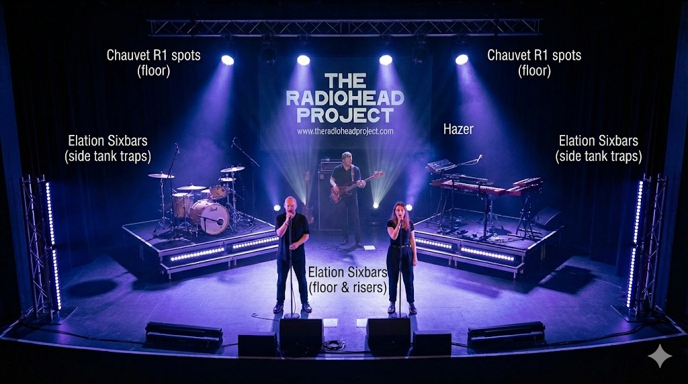

2026 TOUR — LIGHTING & TECHNICAL ADVANCE
Version: 2026.2 (Final) | Date: January 2026
| Lighting Designer: | Aaron Walker |
| Supplier: | Diffusion Productions |
| Timecode Source: | Fergus |
1. GEAR OVERVIEW
The Radiohead Project tours with a compact, high-impact floor package designed for rapid deployment and integration with venue house rigs.
Touring Fixtures
- 4 x Chauvet Rogue R1 Spots
- 10 x Elation SixBar 1000 (referred to as "Batterns")
- 1 x Hazer
- 1 x Art-Net / sACN Node
Control Hardware (FOH)
-
1 x Custom FOH Peli Case containing:
- 1 x Tiny NUC Style PC
- 2 x Touchscreen Monitors
- 2 x Laptop Stands
- 1 x Keyboard & Mouse
- 1 x Power Extension & Cabling
2. PATCH & NETWORK CONFIGURATION
Universe Breakdown
| Universe | Fixtures | Mode | Address Start | Location |
|---|---|---|---|---|
| 1 | Side Bars (4) & Back Spots (4) | Standard | 1.001 (Spots) 1.100 (Bars) |
Side Tank Traps & Upstage |
| 2 | Floor Batterns (6) | 72-Channel | 2.001 | Risers / Floor Package |
House Integration Strategy
Preferred Method: We request 2 hard-line DMX inputs (or network lines) from the House lighting system at FOH. We will re-address our fixtures inside the MA3 software to match the House Universes provided. This prevents the need for a network run from FOH to Stage.
CRITICAL: FOH NETWORK SETTINGS
The NUC PC utilizes specific network interfaces. Do not alter these settings.
- USB-C Ports (x2): Strictly for Touchscreen Monitors.
- USB Hub: Wireless mouse + External USB-NIC.
- External USB-NIC IP:
2.0.0.1(Art-Net) - Internal NIC IP:
10.0.0.1(sACN)
3. STAGE LAYOUT & DEPLOYMENT
Riser Configuration
- Stage Left Riser: Drums
- Stage Right Riser: Keys
- Center Stage: Two Singers (Front)
- Upstage Center: Bass
Note: Risers are flanked at a slight 20-30° angle.
Data & Power Flow
- Universe 1: Input at SL (Drummer) → Side Bars → Upstage R1 Spots.
- Universe 2: Input at Front Riser → Links remaining 5 floor batterns.
- Power: 2 x 16A feeds required (1x SL, 1x SR).
Stage Plot

4. FOH LOGISTICS & PACKING PROTOCOL
⚠️ CRITICAL PACKING INSTRUCTIONS
To prevent damage, the FOH Peli Case MUST be packed in this order:
- BOTTOM: Heavy items (Cabling, Laptop Stands).
- MIDDLE: Computer + Touchscreens (in sleeves). NEVER put screens at the bottom.
- TOP: Power extension and lightweight accessories.
5. SHOW OPERATION
- MA3 Views: View 1 (Palettes/Presets), View 2 (Timecode/Walk-in).
- House Lights: Must be patched into the "Walk-in Fader".
- Timecode: Generated from Fergus; runs automatically in MA3 pool.
6. SETLIST (2026)
- The Bends
- Airbag
- Street Spirit (Fade Out)
- Lucky
- Kid A (Medley)
- Paranoid Android
- Let Down
- All I Need
- Talk Show Host
- Iron Lung
- Climbing Up the Walls
- Planet Telex
- Just
- Weird Fishes/Arpeggi
- High and Dry
- 15 Step
- Nude
- Pyramid Song
- Jigsaw Falling into Place
- Exit Music (For a Film)
- Karma Police
- Fake Plastic Trees
- Creep
- No Surprises